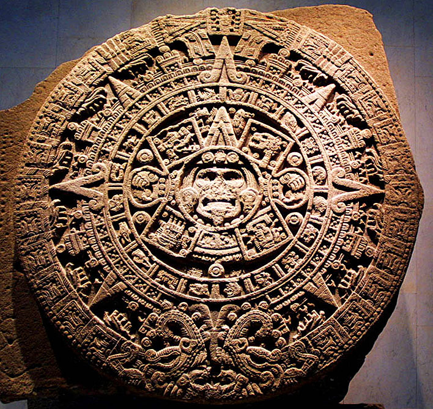
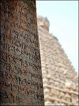
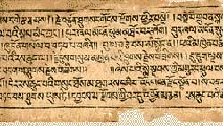

Human beings live in a society not in isolation. Society is a group of people with common culture, Language, religion and Philosophy. This is a micro level explanation of a society. In a macro level a big society may consist of people with different religions, cultures and social and economic backgrounds. Languages plays an important role in a society. Even a Dialectal variety of a language has its influence for the identity and unity in a particular society.
R.R.K. Hartmann and Stork say on culture and language as follows.
"Language is closely related to man's ecology including his social environment and the literary, religions and other traditions of his society. Linguistics, Philosophers and Anthropologists share an interest in the interrelationship of these fields, with a view to establishing the extent of their dependence upon one another (relativity). It is important to determine what is unique in a particular culture as well as to discover features which appear to be universal in all cultures".

Thus, every society has its unique culture and language expression. For example in Eskimo culture there are twenty five names for different types of ice where as in English we find only one word 'Ice'. Thus, every society has its own tradition and culture. Culture and civilization are two different terms as they denote two different things. S. Nagalakshmi (2000) in her paper "Respect for Linguistic and cultural diversity in India" makes a reference of culture and civilization and explains how they are different as follows:
To start with, we have to examine what is 'culture' and how the social scientists and the cultural Anthropologists have approached the subject. For some it is synonymons with civilization, the story of human achievement. For some others, there is a distinction between civilization and culture, in that while the former denotes the technology and the objective information, which is socially cumulative, the latter indicates subjective religion, philosophy and art. Tylor strikes a balance between these two definitions by observing that culture and civilization in its wide ethnographic sense is that complex whole, which includes knowledge, belief, art, morals, law, customs and any other capabilities and habits acquired by man as a member of the society. As Eggan sees it, society and culture are mutually dependent and social relations are carried or exemplified only in cultural behaviour. For Firth, the culture of a society is the very core of it social life.
The story of the culture of a nation is the story of its thoughts, its actions and achievements. Literature, art, folklore and architecture tell us of its thoughts: social institutions and traditions tell us of its thoughts:social institutions and traditions tell us of its action; and historical triumphs in every sphere of human activity tell us of its achievements.
The culture of any nation has to be determined by the highest thought ever reached by humanity is the thought of Upanishads, the Vedanta. But only a few have so far attempted to present the subject in the light of Vedanta, even though volumes have been produced on the subject from different standpoints of thought - archaeology, history, ethnology, Linguistics etc.
Culture has been understood in various ways. In the eyes of the educated common man, culture is neat dress, manners, etiquette, and flowery speech and to some extent, respect for others' sentiments. In the UNESCO sponsored book, 'Traditional cultures in South-East Asia', the following definition of culture is given- "Culture means the total accumulation of material objects, ideas, symbols, beliefs, sentiments, values and forms, which are passed from one generation to another in any given society". These statements are no doubt true, with regard to outward forms of cultural expressions. But what is culture essentially? Culture in its essence, is spiritual perfection of human personality. This is the ideal of culture, which India is holding, not only for herself, but also for all humanity. Thus the term 'Culture' may be better understood by its Sanskrit equivalent "Sanskriti", which means the state of being refined, free from all dross .
In Swami Vevekananda's words, "Life is the unfoldment and development of a being, under circumstances tending to press it down". According to Vedanta, it is 'Avidya' - ignorance that creates a condition of impurity and tends to obstruct the development and unfoldment of the being. According to Swamiji, the effort to purity the being by the application of 'Vidya' is real education and the resultant state of purity and perfection in culture".
Thus, Religion and culture share many common features on the one hand culture and civilization on the other.
As said earlier, culture always varies according to their religion, philosophy and living habits. Hence, it is diverse. When we talk of Indian culture as a whole it is the dynamic culture of India and not of any particular group. However, there can be gradations in culture and civilization. People often say Greek culture was great, Indian culture is great. This type of greatness comes from its history - Similarly, India also has this feature. The culture of India is mainly classified into two types - High culture and Low culture, or Great tradition and little tradition.
Giraddi Govindaraj (1998) in his paper 'Diglossia and cultural stratification - a case study of Kannada' says that "It was Robert Redfield an anthropologist who first made a distinction between great tradition and little tradition in the study of a civilization. "A civilization... is expressed and recorded in the written works of its reflective and highly creative minds. It develops what simpler forms of living have not: a 'great tradition' of the literature and critical few. Beneath this high culture live the common people, whose 'Little tradition' is creator and then creature of the philosophy, science and fine act of the great tradition". This implies that great tradition is a learned tradition, whereas the little tradition is an illiterate and folk tradition. This concept is accepted and further extended by Milton singer "The terms great tradition and little tradition distinguish the cultural content of those aspects of culture that are regarded as 'higher' from those that are considered 'Lower'. The 'higher' aspects are usually more reflexive and more systematically presented and embody the greatest intellectual and aesthetic achievements of a culture. As such, they tend to be stored in 'texts' of various kinds. In the context of Indian civilization Sanskrit represents the great tradition and the regional languages the little traditions."

It is true that Sanskrit has been the language of the 'Shistas'. The Educated and their culture viz. Brahminical culture or Hindu culture has played an important role as the 'great tradition' Again to quote Giraddi Govindaraj.
The role Sanskrit played in the past as a language in underlining the cultural and religious affinities can hardly be exaggerated. Sanskrit represented all that was common to Indian culture. The various regional languages drew their inspiration from this common fountain head. Though it is difficult top say whether it was ever used for everyday communication, it was studied all over India and it enjoyed on enormous prestige. As it had a great tradition of rigorous training in phonetics, grammar, semantics, rhetorics, philosophy and so on, it did not present difficulties in intelligibility. Thus, it was the Lingua franca of "Cultural India".
Sanskrit fulfils all the conditions of a great tradition in Redfield's sense on the one hand, and those of H in Ferguson's sense on the other. It constituted the common knowledge of Indian culture in itself, especially that of Hindi India.
1. It embodied the common mythology of Hindu India.
2. The Vedas, the Upanishads, the Agamas, the Bhagavadgita and other source materials of Indian religious were written in it. All the religions born in India either strictly adhered to or reinterpreted or reacted against these scriptures.
3. It prescribed the moral, ethical, political and social codes of living in the works like "Manusmrti" "Dharmasindhu and Arthasastra".
4. It represented all the aesthetic achievements of the country and dictated the forms and details of sculpture, architecture, music, dance and drama.
5. It codified the practical wisdom in the fields of medicine, administration etc.
6. A great body of literature was written in it. Especially the epics like the 'Mahabharat' and the 'Ramayana' became part and parcel of Indian sensibility. Literary forms like Drama, epic, epigrams and the like became models for Indian literature.
7. It become the Vehicle of Philosophy and other intellectual disciplines.
8. The 'Sacred calander' of rites and ceremonies marking the important occasions of an individual's life cycle and of the reasons came from Sanskrit.
9. The social caste-structure of India into four Varnas also come from this tradition.
Thus, Sanskrit had always played the role of high culture and the regional languages which were influenced by Sanskrit were called low culture. Thus, the classifier system of high and low culture is very much meaningful in case of Sanskrit.
Back to top
The Kinship organization was based on the principles of "Dharma Shastra". All the rituals prescribed for the family were observed. It was the Joint family organization in the beginning. In this system 'Father' was the head of the family called "Kartru" and all others were following the instructions and advise of the father. Marriage was performed not in the same Gotra but other than their own. Society was divided by different Gotras like Bharadwaja, Viswamitra, Vasistha, Jamadagni, Kashyap etc. on the name of the ancient sages. Cross cousin marriage was allowed in the south. The family i.e. 'Kutumba' was a group of persons who were related to each other either by blood or by marriage and lived jointly. In modern days joint family system is breaking and people once marry establish their own house and live separately.
(a) Family Organization:

Family Organization was based among the ancient Aryans on Joint family system. Head of the family was either father or grandfather it he has alive. Each family had its own clan based on the descendents of their respective sages like Bhardawaja, Viswamitra, vasistha, Goutam, Jamadagni etc. Marriage was prohibited in the same clan or Gotra. During the vedic period, life was dictated according to the principles of Dharmasastra and manusmruti. People used to follows the religions principles with all adherence. They had their own concept of birth and death and the rituals to the observed at the birth as well as death, Son used to get property right through inheritance. Daughter did not have share in the ancestral property but there was no prohibition to the father to gift any thing at the time of marriage.
In those days marriage of a girl used to take place immediately after puberty say 12 or 13 years. Early marriage was practiced. If husband dies, wife also used to fall into the funeral pyre of the husband to conduct 'Sati'.
Entire family life was divided into four stages (1) Brahma charya (Bachelor hood) (2) Brahastasrama (Married life) (3) Vanaprasthastrama (Forest living life) (4) Sanyasasrama (Becoming sage).
(b) Social Stratification:
Ancient Hindu society was based on social stratification. They were divided into four varnas. (1) Brahmin (2) Kstriya (3) Vaisya (4) Shudra based on their profession.
Brahmins main profession was to worship God and study scriptures like Vedas, Grammar, Upanishads etc. and perform Homa, Havana and Yajna. In fact they were spiritual heady.
Ksatriyas were the rulers. They used to rule the land and people under their control and used to maintain law and order.
Vaisyas were doing to business of different types.
Shudras used to do manual jobs like Labour, Agriculture and other such things. The duties performed under each group were rigid.
In Veda it is said Brahmins were the mouth of the God, Kshatriyas were the shoulders of the Gods, Vaisyas were the thighs of the God and Shudras were the fact of the Gods.
Originally there were only four Varnas. Later on due to blood mixing and intercast marriages several castes and communities had developed. These castes and sub castes can be seen in all communication whether Brahmin or Ksatriya, or Vaisya or Shudra.
Because of interpolations and inter caste marriages the number of castes and sub castes were increased even among shudras.